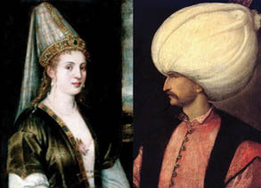

19. yüzyılın en zengin devlet adamlarından biri Serasker ve Sadrazam Koca Mehmet Hüsrev Paşa’dır, doksan küsur yaşına kadar yaşamıştı. Enderun Tarihi kitabının yazarı Tayyarzâde Atâ Bey 9-10 yaşlarında bir çocukmuş. Sünnet olacağı zaman babası Tayyar Ağa büyüklerin ellerini öptürmeye götürmüş. Bu arada, konağında emekli olarak oturan Koca Mehmet Hüsrev Paşa’ya da gitmişler. Paşa: “Ah yavrum, fakir zamanıma rastladın” demiş, sonra bir çekmecenin önünde bir müddet bir şeyler karıştırmış ve çocuğa hediye olarak zarflı[21] bir kahve fincanı hediye etmiş. Çocuk kahve fincanını ne yapsın? Zarf bir sandığın bir köşesine atılmış. Aradan uzun yıllar geçmiş. Atâ Bey memuriyetlerde dolaşmış, önemli işlere memur edilmiş. Evlenmiş, çoluk çocuk sahibi olmuş... Zamanla gözden düşürülmüş, yıllarca zor durumlarda kalmış. Borçlanınca da ev eşyalarını ucun ucun satmağa başlamış. Evini rehin etmiş. Kısaca, çok sıkıntılı günler yaşamış. Bir gün, akşama ekmek parası bile yoktur... Aklına zamanında Hüsrev Mehmet Paşa’nın verdiği zarflı fincan gelmiş. “Götürüp şunu satayım da beş-on kuruş alayım” demiş, fakat hemen satamamış... Meğer fincan Ming sülalesi zamanından kalma bir Çin porseleni, zarfı da Memlûk sultanları devrinin işi, nadide bir sanat eseri imiş! Hararetli bir bedesten açık artırmasından sonra, zarf ve fincan satılmış Atâ Bey bütün borçlarını ödemiş, evini rehinden çıkarmış, geri kalan para ile de, bütün ailesini alıp Hacca bile gitmiş...

Uzun yıllar Ukraynalı bir köylü kızı olduğu düşünülen ama
son zamanlarda İtalyan bir soylu olabileceği de tartışılmaya
başlanan Hürrem Sultan ve Kanuni’nin temsili portreleri